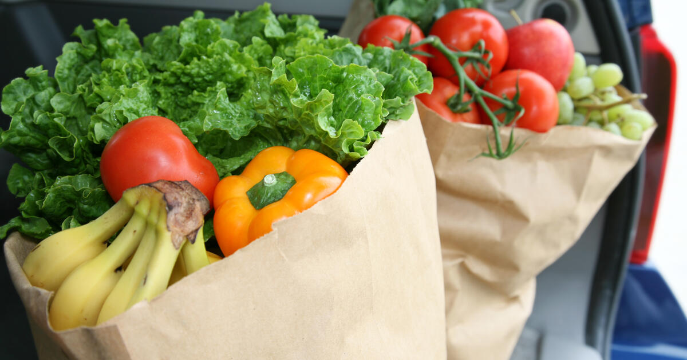

Hunger in the U.S.
Since the dawn of time, all living things have at least one thing in common: they need to eat food. From plants
processing sunlight to people eating seven-course dinners, we all rely on food in order to sustain our lives. For 89.8%
of people in the United States, this concept is practically an afterthought boiled down to which flavor of
Cup Noodles they want to eat that day. However, to the remaining percentage of the population, the battle
against hunger is one which they have to struggle against regularly, and can come with serious drawbacks
that can alter the course of their lives.
Statistics
Today, many of us think of hunger as a problem plaguing other countries, and that's certainly not false.
Most of the media dwells on third world countries and their struggles to survive, and it's a fact that the
U.S. is relatively good at supplementing nutrition to their populus, an annual survey conducted by the U.S.
Department of Commerce as an addition to the monthly Current Population Survey with 89.8% of households being
food secure in 2021. The survey included 30,343 households that serve as a representative sample of the
population of 132 million U.S. civillian households. However, the remaining surveyed households were at least
food insecure, those who were uncertain of having enough food to feed their household, a 10.2% of the
population that isn't nearly insignificant enough to ignore. If we apply the representative percentage to the
population, about 13.4 million households are at least food insecure. Not only that, but 3.8% of U.S.
households had very low food security, meaning that at least one or more household members would regularly be
unable to feed themselves and they would have to reduce the amount of food they ate due to not having enough
of it. [4]

Comparing the percentages to 2020, unfortunately it hasn't changed significantly. In the 2020 iteration of
the survey, 10.5% of households were at least food insecure and 3.9% were very food insecure. Compared to
2021's statistics, a 0.3% and 0.1% decrease is certainly a step in the right direction, but isn't a
thorough dent against the problem, and until further reports are submitted, the cause is up
for speculation. [4]
The survey also reported on the supplemental programs households used. About 56% of food insecure households
reported that in the previous month, they had participated in at least one of the following: the Supplemental
Nutrition Assistance Program (SNAP), the Special Supplemental Nutrition Program for Women, Infants, and
Children (WIC), and the National School Lunch Program. However, food secure households in the median surveyed
spent 16% more for food than food insecure households in the median of the same side, including food purchases
made with SNAP, which increases the budget to purchase foodstuffs for struggling households. Even with
assistance, such a big gap in budget makes it difficult to expect food insecure households to live with the
same comfort of food secure households even with specialized programs. [5]
Effects of Malnutrition
Nobody is, or at least shouldn't be, ignorant enough to sweep the issue of hunger under the rug, spouting some nonsense about how it isn't
actually that bad. All living things require nutrition to survive, however many likely don't know the full scope
of how detrimental malnutrition truly is. It is important to note that while malnutrition can be either undernourishment or overnourishment, it is usually associated with the former. Some of us think that we can survive a month without food, maybe even
more, and while that certainly may be true, the time a person will spend without food would still be miserable.
While suffering under malnutrition, you would experience a myriad of symptoms, including pale and dry skin,
susceptibility to bruising and gum bleeding, rashes, changes in skin pigmentation, thin hair, aching joints, brittle bones,
a swollen and cracked tongue, night blindness, and an increased sensitivity to light. [13]
The effects of malnutrition can also impact muscle and organ function if left untreated for an extended period of
time. Without dietary intake, the body instead draws on reserve tissues such as muscle tissue for sustenance,
hampering muscle function. This includes cardiac muscles, or the heart, resulting in a decrease in cardiac output,
or the release of blood. The decrease in cardiac output will also have an impact on renal function, or kidney function,
resulting in a decrease in the rate the kidneys can filter out excess waste. Diaphragmic and respiratory muscles
will also be impacted by muscle mass decreasing, resulting in a decrease of cough pressure and emission of secretions,
delaying recovery from respiratory tract infections. Gastrointestinal function will also be hit, the colon losing
its ability to reabsorb water and electrolytes, which help regulate chemical reactions within the body, possibly
leading to severe diarrhea. Finally, the immune system's cell-mediated immunity will be impaired due to the
effects of malnutrition feeding on the body to support itself, leading to an increase in the risk of infection
and delayed wound healing. Combined with the fact that in the 1930s, surgeons observed that malnourished surgical
patients have complications and mortality rates three to four times higher than normally nourished patients as well
as longer hospital admissions, the malnourished have both a higher chance to contract disease as well as a higher
chance to pass as a result of it, as well as it being more expensive to treat as a result. [10]

Even ignoring the severe health risk malnourishment presents, it also has a severe impact on future generations
as well. Malnourishment in early childhood can impact brain development, cognition, and school performance into
late childhood. Undernourished adolescents are more likely to miss school and suffer both cognitively and
psychologically. They'll often be tired and have difficulty paying attention in class, impacting their future
prospects. When society is built upon passing the torch to future generations to uphold order, it becomes concerning
when such future generations are put at an inherent disadvantage due to the situation they were placed in. [12]

Solutions
I'm not pretentious enough to say that I have the ultimate solution to ending hunger, even on a city level let alone
a national level. Hunger is a complex topic that can't simply be solved with a Band-Aid fix, otherwise it would
have disappeared with the dinosaurs. However, there are multiple stopgap solutions that can alleviate the impact it
has on the populus while the true professionals hack away at the problem.
The previously mentioned Supplemental Nutrition Assistance Program, or SNAP, is a helpful tool to families in need
of a food budget. Each state has a different application form and process, but all include calculating the total countable resources
in a household to determine eligibility. The additional budget provided by SNAP can buy any food for a household,
including fruits, vegetables, meat, poultry, fish, dairy products, breads and cerals, snack foods and non-alcoholic
beverages, and seeds and plants. While it admittedly does not provide enough to support needy families to the same level of comfort
that food secure families can experience, any food budget benefits are a welcome addition to a starving household. [7]

Of course, the ever-present National School Lunch Program is a tool used by many students on a national
level. Established under the National School Lunch Act signed by President Harry Truman in 1946, the program
is meant to provide nutritionally balanced, low-cost or free lunches to children. It is a federally assisted
meal program that operates in public and nonprofit private schools and residential child care institutions.
Though it has been a hotbed of controversy and debate, stemming from competing interests from the USDA, corporations, parents,
and students, it remains an important program that supports many students daily. [8]

The USDA has also provided grants to increase the quality of the school lunch, one of which being Farm to School Grants.
One of the greatest concerns surrounding the National School Lunch Program has been their quality and nutrition, so through
the granting of competitive Farm to School Grants can be awarded by the Secretary of Agriculture for actions such
as training, developing school gardens, and implementing farm to school programs. As such, it promotes the increase
in locally grown products being found in school lunches, alleviating concerns about the nutrition of students. [9]
One of the most obvious solutions would be to increase awareness of the topic, which would bring to light how
crippling hunger is to those affected. Therefore, more demand for a solution would rise, leading to it becoming
higher of a priority for those who could actually solve the issue. However, that's all assuming that it isn't
an extreme priority at the moment. Another could be to increase the number of restaurants in residential areas, but
it would become important to vet the restaurants who decide to set up shop. Though more options for food would be
somewhat of a solution, most restaurants who could afford to spread out closer to residential areas with little drawback
are fast food chains, which are known for being detrimental to nourishment due to their lack of nutrition. Not only
are they convenient to stop by, but most are also relatively cheap, becoming a major factor in the malnutrition
problem.

The simplest solution would likely be to increase the scale of affordable cooking lessons, in order to
increase the benefits of the SNAP program for households who rely on it, as well as being a cost saving measure in
the long-term for food insecure households. However, this also relies on people being perseverant enough to
continue taking the course, them being willing to cook at home even with tiredness from their daily activities, and
the teachers being qualified. Not only that, but the cost of hiring and building costs would also have to be taken into
account, and while grants are a possible solution, it would likely not be enough to supplement programs for all of
the nation.
While the situation may seem bleak and possibly disastrous, it's important to note that there's already organizations working to
solve the problem, and it's only a matter of time until it becomes a relatively small issue. Now, whether that's
years, decades, or centuries later is beyond me, but it's grown into even less of an issue compared to the past,
especially when humans used to be hunter/gatherers who had to rely on nature to supply their meals. With the introduction
of agriculture, hunger rates in the past would have likely decreased substantially, and there's nothing that says
such a breakthrough cannot happen in the present. It's also important to avoid remaining stagnant and claiming there
isn't anything you can do. There's always a way to effect change in the world, whether it be developing the next
agricultural breakthrough or simply donating to a local food bank, and every decision in the world snowballs into the
future we head towards. Creating a world where everyone can live in comfort should be the ultimate ideal, and with
everyone's contributions, humanity can continue stepping towards that goal, no matter how far away it is.
Works Cited
- Member States | United Nations, United Nations, https://un.org/en/member-states
- Global - Food, WE Charity, https://www.we.org/en-US/our-work/we-schools/we-schools-campaigns-and-curriculum/issues-details/global-food
- USDA ERS - Key Statistics & Graphics, USDA, https://www.ers.usda.gov/topics/food-nutrition-assistance/food-security-in-the-u-s/key-statistics-graphics/
- How the Census Bureau Measures Poverty, United States Census Bureau, https://www.census.gov/topics/income-poverty/poverty/guidance/poverty-measures.html
- Household Food Security in the United States in 2021 Publishing Details, USDA, https://www.ers.usda.gov/publications/pub-details/?pubid=104655
- Household Food Security in the United States in 2021, Alisha Coleman-Jensen, Matthew P. Rabbitt, Christian A. Gregory, Anita Singh, USDA, https://www.ers.usda.gov/webdocs/publications/104656/err-309.pdf?v=3352.1
- Supplemental Nutrition Assistance Program (SNAP), USDA, https://www.fns.usda.gov/snap/supplemental-nutrition-assistance-program
- National School Lunch Program, USDA, https://www.fns.usda.gov/nslp
- U.S.C. Title 42 - THE PUBLIC HEALTH AND WELFARE CHAPTER 13 - SCHOOL LUNCH PROGRAMS, United States Code, https://www.govinfo.gov/content/pkg/USCODE-2019-title42/html/USCODE-2019-title42-chap13-sec1769.htm
- Malnutrition: causes and consequences, National Library of Medicine, https://www.ncbi.nlm.nih.gov/pmc/articles/PMC4951875/
- Malnutrition in America, Focus For Health, https://www.focusforhealth.org/malnutrition/
- The changing face of malnutrition, UNICEF, https://features.unicef.org/state-of-the-worlds-children-2019-nutrition/
- Malnutrition, Johns Hopkins Medicine, https://www.hopkinsmedicine.org/health/conditions-and-diseases/malnutrition